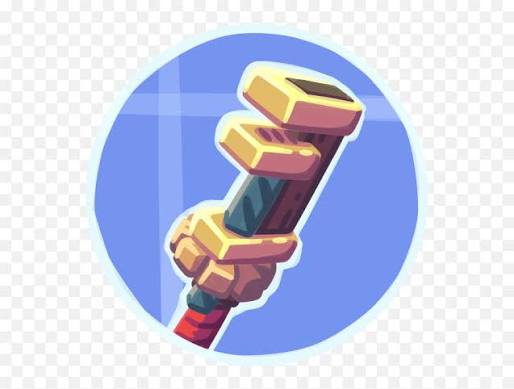
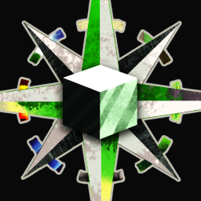

Mod Create
Categoria: Tecnologia
Versão: 1.20+
Descrição: Adiciona engrenagens, esteiras, máquinas e sistemas mecânicos para automatizar processos.
Saiba maisDescubra os melhores mods para transformar sua experiência no jogo.
Mods são modificações criadas pela comunidade que adicionam novos itens, blocos, criaturas, dimensões, mecânicas e diversas outras funcionalidades ao Minecraft.

Categoria: Tecnologia
Versão: 1.20+
Descrição: Adiciona engrenagens, esteiras, máquinas e sistemas mecânicos para automatizar processos.
Saiba maisCategoria: Biomas
Versão: 1.20+
Descrição: Adiciona uma grande variedade de biomas, cada um com suas próprias características e recursos.
Saiba maisCategoria: Ferramentas e Armas
Versão: 1.20+
Descrição: Permite criar ferramentas e armas personalizadas com diferentes materiais e habilidades.
Saiba mais
Categoria: Mapas e Navegação
Versão: 1.20+
Descrição: Adiciona um mapa interativo em tempo real, permitindo marcar pontos de interesse e explorar o mundo com facilidade.
Saiba mais